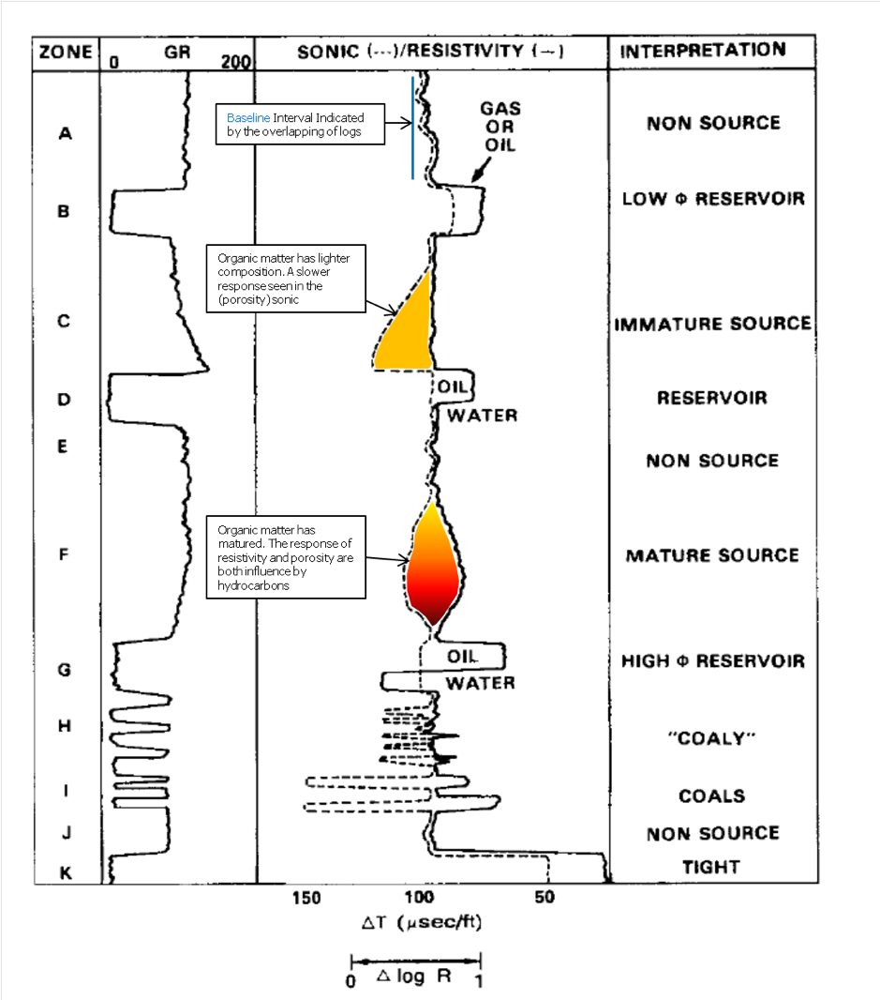
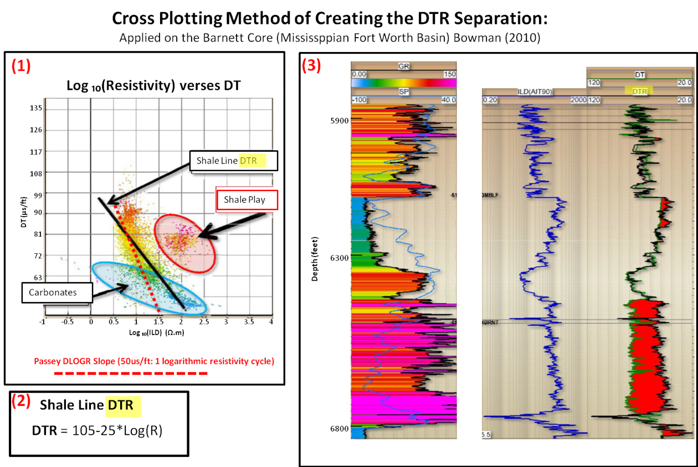
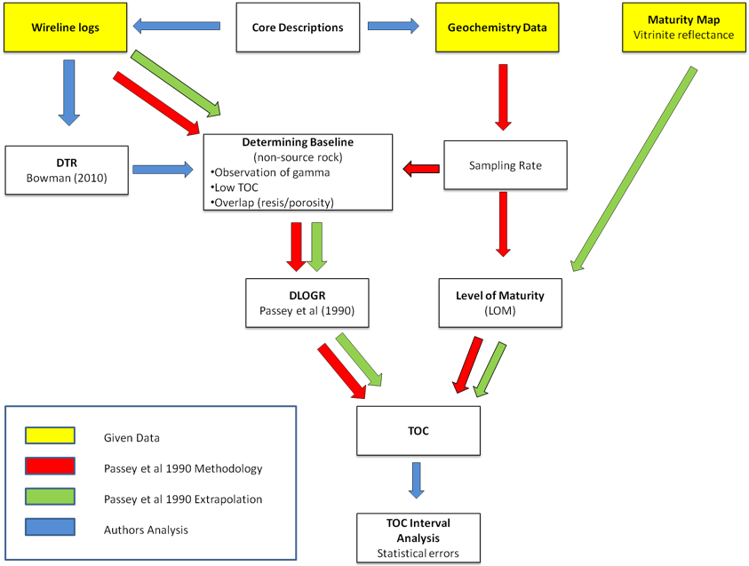

Thesis
Unconventional Source Rock Potential of the Goldwyer Formation, Canning Basin, Western Australia: Application of the Delta Log R Technique
Michael Wenz B Sc (The University of Adelaide) This thesis is submitted in partial fulfilment of the requirements for the Honours Degree of Bachelor of Science (Petroleum Geology and Geophysics) Australian School of Petroleum The University of Adelaide November 2012.
Abstract The Ordovician Goldwyer Formation in the Canning Basin is considered a favourable unconventional hydrocarbon target. This project concentrates on the use of petrophysical data for evaluating the source rock potentiality within the formation. Due to the advances in drilling methods, unconventional resources have become economically viable. The study of these resources can be done by a petrophysical means and with the integration of geochemistry. Unconventional source rock characterisation has been intensively studied since 2009 from the perspective of accessing unconventional hydrocarbons from the Barnett Shales. Resource evaluation mapping from an observation of the distribution of organic richness is a key component in exploration of unconventional resources. To understand source rock characteristics and organic richness in the Goldwyer Formation through an observation of the values of Total Organic Carbon (TOC), the Delta Log R (DLOGR) technique was used for 12 wells spread across the Canning Basin intersecting the formation. The DLOGR technique can provide an interpolation of continuous (TOC) values over the source rock interval with limited geochemical data and also has the ability to extrapolate to wells without any geochemical sampling. It is derived by creating DLOGR separation through wireline logs and applying an empirical relationship with level of Maturity (LOM) and geochemistry to predict TOC (mentioned by Passey et al. (1990)). This method is especially useful to evaluate TOC distributions for wells with limited or no geochemical data. Prediction of TOC will help in resource evaluation and estimation. The Goldwyer Formation consists of two shale members, an upper member and a lower member comprising two shales. These members are considered source rocks. The upper consists of alternating laminated carbonates and shale source rock in the form of G.prisca, which is considered a shale oil play located in the Barbwire Terrace. The lower shale member consists of interbedded shales, siltstones and claystones, which have been proven to be a shale gas play. Higher TOC values and thicker interval have been observed in the lower shale member spread in the Kidson Sub-Basin and Broom platform. The interval has shown a better quality TOC richness and is associated with a maximum flooding surface in the lower shale member. The DLOGR technique was applied to the wells with the most available geochemical data sampling points. Overall, computing the correlation with the predicted TOC versus true TOC of the upper and lower members demonstrated a good fit to the true TOC values. Negative TOC values arising from this technique occurred in the upper shale member. These anomalous negative values were created by extreme inflections of the sonic log due to the cyclic nature of the carbonates and shales. Cross plot analysis has been associated with low gamma ray values (in the wells Aquila, Willara, McLarty, Munro, Pictor and Parda) and the negative TOC values. In general, the TOC quality in the wells analysed was significantly low and overall, the source generative potential was low. The methodology of Bowman (2010) was used in conjunction with that of Passey et al. (1990). The method applies the same hypothesis as Passey et al (1990). The DTR separation showed a promising correlation with DLOGR separation in wells which have indicated hydrocarbon in the source rock interval of the formation. This method, incorporating Passey et al. (1990) and Bowman’s (2010) methodologies for unconventional resource assessments could be used for the development of unconventional exploration. The method, while successful most times a few areas may not always be applicable, as it has not worked in some areas and has led to some incorrect assumptions.
Images from Thesis
  Conclusions
1. Given there is potential for unconventional plays to be found and developed in Australia, and the Ordovician Goldwyer Formation has been of recent interest. Application of the DLOGR Technique can help to evaluate the TOC distributions. The key objective was to apply Passey et al.’s (1990) methodology to assess whether it was applicable to the Canning Basin, which turned out to be so. The deviation of error in computing TOC_DLOGR was not large. However, the available geochemical data demonstrated that most of the TOC content is low (<0.5%). Seen diagrammatically and statistically, the TOC_DLOGR matched true TOC to a fair degree with the each of the wells the technique had been applied to. The predicted versus true graphs correlation coefficients were 0.662 and 0.635 for the upper shale and lower shale member respectively. The TOC samples contained bitumen and contaminants, which could have affected the statistics.
2. Cycles of the carbonates have been correlated with the negative TOC_DLOGR values. The low gamma ray values matched the carbonates, however this was not observed in the upper shale unit in Dodonea-1.
3. Bowman’s (2010) cross plotting method also has worked with the Passey et al.’s (1990) methodology of interpreting potential shale resource plays. Bowman’s (2010) synthetic DTR applies the gradient of the resistivity log and when created, mimics the responses of the resistivity log used in the DLOGR technique. The DTR separation is similar to the DLOGR separation. The McLarty well did not apply to this observation.
4. Upper shale members are considered to have been deposited under intertidal conditions. High amounts of G. prisca have been associated with potential shale oil plays along the Barbwire Terrace and in the Willara Sub-basin.
5. The lower shale member consists of deep marine shales, siltstone claystone with low TOC (0.2-5%) and low amounts of organic matter, however there is a thick interval considered to be a shale gas play in the Kidson Sub-basin and Jugurra Terrace. High
TOC values were correlated with a maximum flooding surface (in the wells: Aquila, Hedonia, Hilltop, McLarty, Munro, Pictor and Parda). The case study can still be expanded on the Goldwyer Formation. Passey et al. (1990) and Bowman’s (2010) methodologies could be enhanced to develop new methods for unconventional evaluations. Examples of such new ideas are the analysis of the baseline and LOM to potentially derive TOC values from a cluster of separation (seen as the shale play). More detailed studies of the source rock can be done across the Goldwyer, which will be outlined in the recommendations.
Recommendations for Further Work
1. Regional and detailed stress analysis of local stress fields to identify the distribution fracture network and migration systems should be considered.
2. G.prisca contained in the Horn Valley Siltstone Formation occurring in the Ordovician, has been found in the Amadeus Basin and the Ouldburra Formation in the Officer Basin occurring in the Early Cambrian. The unconventional source rock analysis, with the use of the DLOGR technique could be applied for unconventional exploration.
3. Further studies of exploration of the assessment of unconventional source rock characterisation. This thesis was done a regional scale with minor detail of the sub- basins terraces. The DLOGR technique could be done more in a local scale. The Fitzroy Trough and the Gregory Sub-basin are places of interest in the shale gas play (Figure 1) and were not looked at. Looking at the composition of the unit 1 shale member of the Goldwyer Formation Solanum-1, with detailed facies analysis and wireline log signature comparison should be done.
4. There has been little work on the mineralogy to understand the shales property characteristics, such the sorption and adsorption properties.
5. Other formations which can be compared to the Goldwyer Formation for source rock potential is the Eagle Ford shale and the Bone Springs Formation, due they have the same kind of depositional system creating a unconventional petroleum system.
6. Gridding organic richness on a local and regional scale of the Goldwyer formation in the Upper and Lower shale member.
7. The DTR separation created by Bowman represents an integration of three new concepts: a. The DTR separation can be represented in equations simular those for the in the DLOGR equations b. Bowman’s equation could derive a value for the LOM c. The ability to indicate depth from a baseline reference interval
8. Petrophysical and seismic attribute analysis can be integrated as demonstrated by the application of Bowman’s cross plotting technique to relate seismic attributes. This can be useful for understanding the ductility and brittleness of the shales, which can be interpreted from wireline logs. The analysis can be used as forward model to predict response change observed in seismic attributes. The model parameters are adjusted to give a low and high case scenario, (80%) for high and (20%) for low gas saturation are common parameters.
9. Basin modelling with an integration of seismic and petrophysical analysis as outlined above can assist with gaining further understand of the basin and its potential resources.